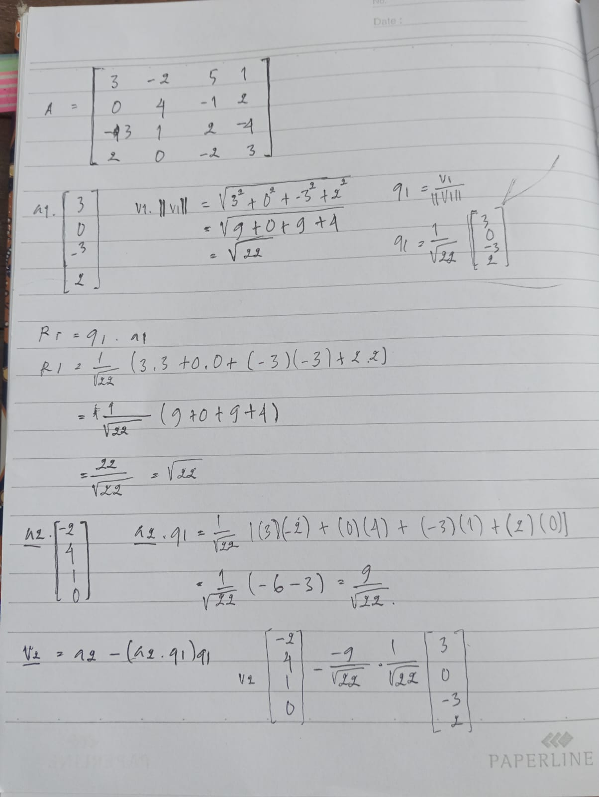
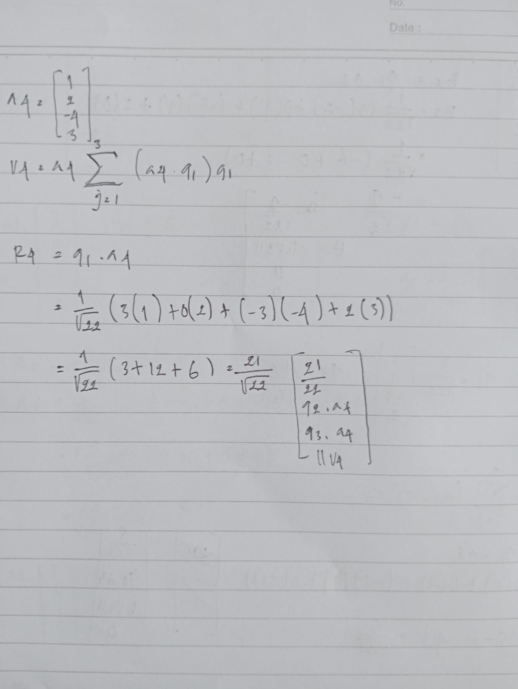
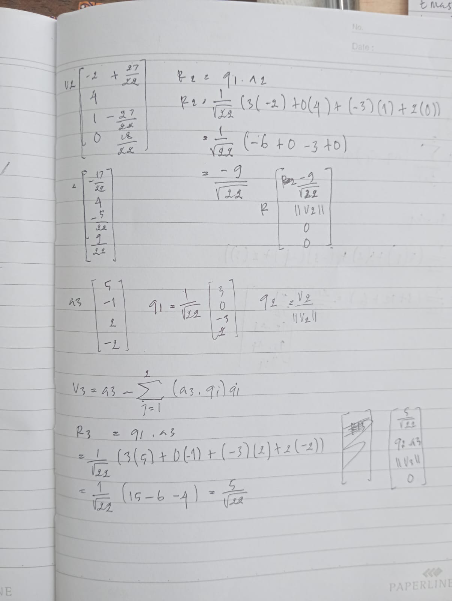

tugas dekomposisi QR#
Foto Catatan#

Bagian 1 — Setup & \(q_1\)

Bagian 2 — Kolom \(a_4\)

Bagian 3 — \(v_2\), \(q_2\), \(v_3\)
Keterangan Bagian 1#
\[\begin{split}A = \begin{bmatrix} 3 & -2 & 5 & 1 \\ 0 & 4 & -1 & 2 \\ -3 & 1 & 2 & -4 \\ 2 & 0 & -2 & 3 \end{bmatrix}\end{split}\]
\[\begin{split}\|v_1\| = \sqrt{22}, \quad q_1 = \frac{1}{\sqrt{22}}\begin{bmatrix}3\\0\\-3\\2\end{bmatrix}\end{split}\]
\[R_{11} = \sqrt{22}, \quad a_2 \cdot q_1 = \frac{-9}{\sqrt{22}}\]
\[\begin{split}v_2 = \begin{bmatrix}-2\\4\\1\\0\end{bmatrix} - \frac{-9}{\sqrt{22}} \cdot \frac{1}{\sqrt{22}}\begin{bmatrix}3\\0\\-3\\2\end{bmatrix}\end{split}\]
Keterangan Bagian 2#
\[R_{14} = \frac{1}{\sqrt{22}}(3+0+12+6) = \frac{21}{\sqrt{22}}\]
\[v_4 = a_4 - \sum_{j=1}^{3}(a_4 \cdot q_j)q_j\]
Keterangan Bagian 3#
\[\begin{split}v_2 = \begin{bmatrix}-\frac{17}{22}\\4\\-\frac{5}{22}\\\frac{18}{22}\end{bmatrix}, \quad q_2 = \frac{v_2}{\|v_2\|}\end{split}\]
\[R_{13} = \frac{1}{\sqrt{22}}(15-0-6-4) = \frac{5}{\sqrt{22}}\]
\[q_3 = \frac{v_3}{\|v_3\|}\]